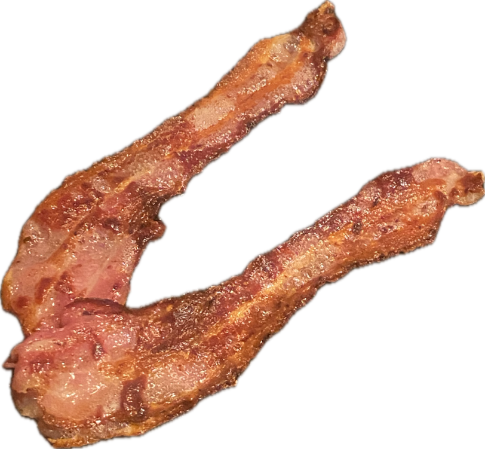

Álvaro Ramírez
How I smash burgers
I'm neither a burger expert nor a connoisseur of any kind, yet I sure have a lot of fun smashing burgers at home. Needless to say, I shamelessly enjoy gobbling them too!

Figure 1: my smash burger
I'll share details on how I smash my burgers, but here's a quick ingredient list, if that's all you need.
- Mince beef (20%-30% fat).
- Streaky bacon.
- Brioche burger buns.
- American cheese slices (cheddar individual slices work too).
- Lettuce.
- Tomatoes.
- Onions.
- Pickles.
- Jalapeños.
- Garlic.
- Chipotle powder.
- Mayonnaise.
The calling
My quest to smash burgers at home didn't start until earlier this year, while watching the The Menu. I just could't stop craving the burger from that scene, so I set out to start smashing my own.

The gear
Don't rush to buy anything fancy. Your existing gear will likely do the job just fine. I'd say try a few things out and only upgrade when needed. I'll share the gear I use and where I felt I needed tweaking.
Skillet
While I didn't have a griddle at home, I did have a couple of trusty Lodge skillets (cast iron and carbon steel). Both work great for burgers, though I have a slight preference for the carbon steel one, as it's the bigger of the two and gives a little more room for manoeuvring, specially when smashing two burgers at a time.
Grill Spatula (too big/stiff for skillet)
Somewhat inspired by the film, I got myself a wide spatula so I could firmly press those patties against the skillet, and to flip of course.
While this kind of spatula may work well on a spacious griddle, I felt constrained on a relatively small cast iron. Specially when flipping. I went looking for an alternative.
Spatula + smasher (my winning combo)
Over at the r/castiron subreddit, I discovered fish spatulas. They are fairly agile on cast irons but also work great for loosening burger patties before flipping.

While effective for flipping, fish spatulas are obviously no good for smashing. So I got myself a burger smasher. This combo worked well for me.

Ingredients
While I've drawn inspiration from others, I've landed on my own preferred ingredients. I'm sure that will continue changing over time. Pick and choose as your heart desires.
Minced/ground beef
Minced beef with higher fat content (around 20-30%) is often recommended for a couple of reasons:
- Flavour: Fat equals flavour in cooking. The higher fat content will melt during cooking and become 'self-basting', resulting in a juicier and more flavourful burger.
- Texture: The fat in the beef melts under heat, helping the burger achieve a crispy, caramelized exterior known as the Maillard reaction, which contrasts nicely against the soft, juicy interior.
In the UK, I can typically find minced beef with 15%-20% fat content at the main supermarkets.
Bacon
I tend to prefer smoked streaky bacon, but hey these will be your burgers. Your burgers, your rules.

Buns (brioche)
I hear potato buns are great for burgers. I've yet to try them. So far, I've settled for brioche. I happen to find these near me, so I've gone with them.
American cheese
American cheese is often the burger cheese of choice.

While American cheese isn't widely available in the UK, the individually wrapped orange-looking cheddar cheese slices work just fine.

Toppings
I like my burgers with lettuce, tomatoes, onions, pickles, and occasionally jalapeños. For pickles, I typically just take cornichons and slice them up.

Burger sauce (chipotle/garlic/mayo)
While classic burger sauce is often made with mayo, ketchup, pickles, and mustard, I've gone fairly rogue here.
You see, I love chipotle mayo. I'm also a fan of garlic mayo, so I figured why not both? Turns out these three ingredients work great together.
I like to draw out the flavours by first mixing the garlic and chipotle with a little hot water.
- 1 garlic clove.
- 2 teaspoons of chipotle powder.
- 1 teaspoon of boiling water.
- Pinch of salt.

…and then thicken with mayo.
- 1/4 cup of mayo.

These are very rough measurements, tweak to your preference. Make more garlicky, spicier, or soften things by adding garlic, chipotle, or mayo.
Assembling
I like to assemble in the following order from the bottom bun up.
- Sauce on bottom bun.
- Lettuce.
- Tomatoes.
- Onions.
- 2 patties (melted cheese on both).
- Bacon.
- Pickles.
- Jalapeños.
- Sauce on top bun (oops, I forgot in the picture).
…and here's the final product.
If you gave smashing burgers a go, I'd love to hear about it. Also tips are very much welcome. Get in touch (Mastodon / Twitter / Reddit / Email).